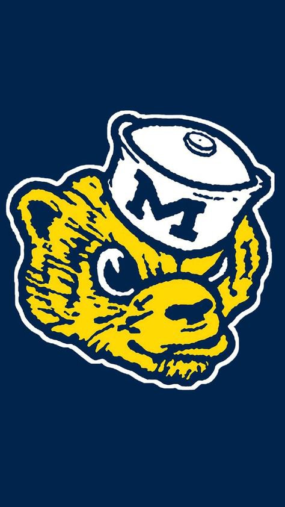

POSTSEASON
Big Ten Championship · NCAA Regionals · Frozen Four · National Championship
No postseason games scheduled yet. Each round appears here with the same rankings, broadcasts, Watch/Listen links, and game details when Michigan reaches it.

No postseason games scheduled yet. Each round appears here with the same rankings, broadcasts, Watch/Listen links, and game details when Michigan reaches it.